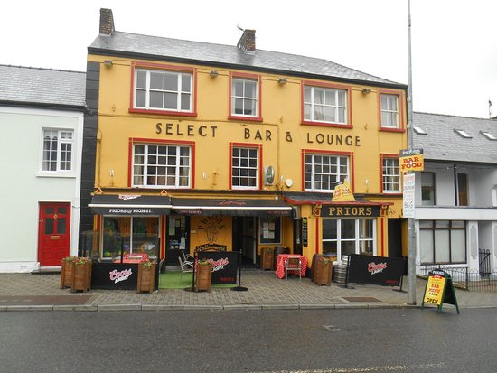

The local establishment that is Smyths Bar and Restaraunt provides a service one would expect in the most elite, high-end enterprise. With Fantastic food all day, ambient atmosphere and friendly servers Smyths is the pinncale of a good dining experience. The establishment doesnt let down when it comes to the pub experience, with a true Irish feel, easy-going barmen and women, and pristine Pints, Theres not much left to be desired after any expereience one encouters in this fine local establishment.
Priors

In the top half of the town a Brilliant yellow building known as Priors is the gem of the Friendly Town. A bright and patriotic atmosphere is a strong vibe of the Pub, with Kind servers and fresh food, The dining experience has no chip on its shoulder. An excellent NightLife is provided with its large interior and plenty of Live Music. Priors of Ballinamore is the place to be!